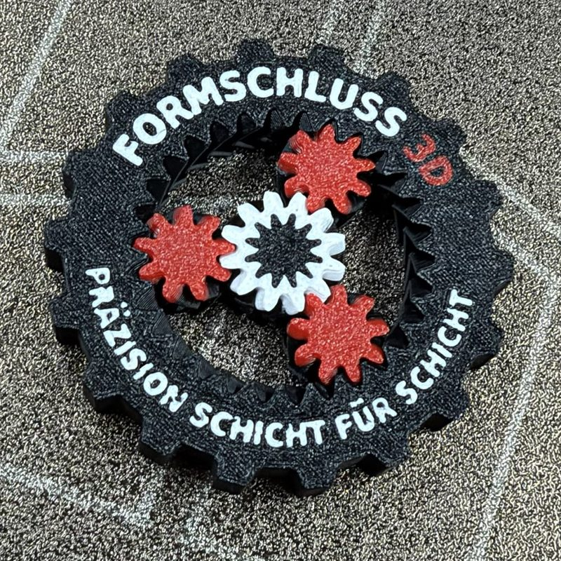

Ersatzteile
Ein Teil ist gebrochen und nicht mehr zu bekommen? Mit einer Datei, einer Skizze oder dem Originalteil als Muster baue ich es nach.
Ersatzteile, Prototypen, Einzelstücke und Deko aus Kunststoff. Konstruiert und gedruckt in Haren (Ems) von einem Feinwerkmechaniker.
Anfrage stellenDu kommst mit einer Idee, einer Skizze oder einem kaputten Teil. Ich konstruiere, drucke und prüfe es mit dir.
Ein Teil ist gebrochen und nicht mehr zu bekommen? Mit einer Datei, einer Skizze oder dem Originalteil als Muster baue ich es nach.
Aus deiner Idee wird ein druckgerechtes 3D-Modell, passend zu Einsatz und Druckverfahren.
Ein Teil, das du einbauen und prüfen kannst, bevor du in Werkzeuge oder eine größere Stückzahl investierst.
Vom Einzelteil bis zu kleinen Stückzahlen. Ich halte die Druckeinstellungen fest, damit Nachbestellungen so ausfallen wie das erste Teil.
Personalisierte Einzelstücke mit Name oder Motiv, auch mehrfarbig gedruckt, zum Beispiel als Geschenk, Dekoration oder Erinnerungsstück.
Ich drucke aus PLA und PETG. ASA und carbonfaserverstärkte Sorten (CF) bereite ich gerade vor und teste sie, bevor ich Aufträge damit annehme. Welches Material passt, hängt von Belastung, Temperatur und Umgebung ab. Ich berate dich dazu, bevor ich drucke.
| PLA | Modelle, Anschauungsteile, Vorrichtungen für drinnen. Wird bei Wärme früh weich, nicht für Sonne oder Auto. |
|---|---|
| PETG | Gehäuse, Halter, Teile mit Kontakt zu Wasser. Bei hoher Hitze ist Schluss. |
| ASA in Vorbereitung | Für Teile mit Wärme und Sonne, auch im Außenbereich. Verfügbar, sobald meine Tests abgeschlossen sind. Frag gern an. |
| PETG-CF, ASA-CF in Vorbereitung | Für steife, formstabile Teile wie Halter und Zahnräder. Spröder als ungefüllte Sorten. Verfügbar, sobald meine Tests abgeschlossen sind. |
Verbindliche Kennwerte stehen im Datenblatt des jeweiligen Materials und hängen von Druckrichtung und Einstellungen ab. Bei druckführenden oder sicherheitsrelevanten Teilen sprechen wir vorher über Anforderungen und Prüfung. Ich sage dir ehrlich, wenn ein Teil dafür nicht geeignet ist.
Du schickst eine Datei (STEP, 3MF oder STL), eine Skizze oder ein Foto mit Maßen. Oder du bringst das Teil vorbei.
Ich prüfe, ob und wie sich das Teil drucken lässt, wähle das Material und nenne dir Preis und Termin.
Das Teil wird gedruckt, von Stützmaterial befreit und bei Bedarf nachgearbeitet.
Wichtige Maße werden geprüft. Du holst das Teil in Haren ab, oder wir klären den Versand.
Bei einem Termin bringe ich Musterteile mit, damit du Gewicht, Oberfläche und Steifigkeit selbst beurteilen kannst.

Eigenes Design mit beweglichen Zahnrädern, mehrfarbig gedruckt und mit Name personalisierbar. Zeigt, wie genau sich bewegliche Teile drucken lassen.
Ich bin Feinwerkmechaniker und arbeite an einer CNC-Fräsmaschine. Früher habe ich Metall bearbeitet, heute bearbeite ich glasfaserverstärkte Kunststoffe (GFK). Deshalb weiß ich, worauf es bei Maßen und Toleranzen ankommt.
Formschluss 3D baue ich neben meinem Hauptberuf in Haren (Ems) auf, weil ich 3D-Druck spannend finde und mein Wissen aus der Fertigung gern auf gedruckte Teile übertrage.
Mir ist wichtig, dass ein Teil nicht nur gut aussieht, sondern im Einsatz passt. Deshalb frage ich vorher, wofür du es brauchst, und sage dir ehrlich, was sich drucken lässt und was nicht. Da ich allein arbeite, bin ich nicht immer sofort erreichbar. Termine sprechen wir vorab ab. Du sprichst von der Anfrage bis zur Übergabe immer direkt mit mir.
Am besten STEP oder 3MF, STL geht auch. Ohne Datei reichen eine Skizze mit Maßen, ein Foto oder das Originalteil.
Das hängt von Größe, Menge und meiner Auslastung ab. Nach deiner Anfrage nenne ich dir einen konkreten Termin.
Der Preis richtet sich nach Material, Druckzeit, Nachbearbeitung und Menge. Schick mir deine Anfrage, dann bekommst du ein Angebot.
Die erreichbare Genauigkeit hängt von Form, Material und Druckrichtung ab. Bei passungskritischen Maßen sprechen wir vorher darüber, und ich teste das Spiel am Muster, bevor ich dir etwas zusage.
In den meisten Fällen ja: für Ersatzteile, Halter, Gehäuse, Vorrichtungen und Muster. Bei druckführenden oder sicherheitsrelevanten Teilen gebe ich keine Zusage. Sag mir kurz, wofür du das Teil brauchst, dann sage ich dir ehrlich, ob es geht und welches Material passt.
Du holst das Teil in Haren (Ems) ab. Wenn du nicht vorbeikommen kannst, ist Versand auf Anfrage möglich. Die Kosten dafür klären wir vorher.
Für ein Angebot brauche ich:
Markus Wolters
FORMSCHLUSS 3D
Telefon: 0151 449 38028
E-Mail: woltersmarkus@icloud.com
Standort: Haren (Ems)
Antwort in der Regel innerhalb von 24 bis 48 Stunden.
Angaben gemäß § 5 DDG
Markus Wolters, FORMSCHLUSS 3D
Zum Emsdeich 16, 49733 Haren (Ems)
Telefon: 0151 449 38028 · E-Mail: woltersmarkus@icloud.com
Gemäß § 19 UStG wird keine Umsatzsteuer berechnet.
Verantwortlich für den Inhalt nach § 18 Abs. 2 MStV: Markus Wolters, Anschrift wie oben.
Verantwortlich: Markus Wolters, Zum Emsdeich 16, 49733 Haren (Ems), E-Mail: woltersmarkus@icloud.com.
Hosting: Diese Seite wird über GitHub Pages (GitHub Inc., USA) ausgeliefert. Beim Aufruf verarbeitet der Hoster technisch notwendige Daten wie die IP-Adresse, um die Seite auszuliefern und den Betrieb zu sichern (Art. 6 Abs. 1 lit. f DSGVO). Ich selbst setze keine Cookies, kein Tracking und keine Analyse-Tools ein und binde keine externen Schriften ein.
Kontakt: Wenn du mir per E-Mail oder Telefon schreibst, verarbeite ich deine Angaben nur, um deine Anfrage zu beantworten (Art. 6 Abs. 1 lit. b bzw. f DSGVO). Ich gebe sie nicht weiter und lösche sie, wenn sie nicht mehr gebraucht werden und keine Aufbewahrungspflicht besteht.
Deine Rechte: Auskunft, Berichtigung, Löschung, Einschränkung, Widerspruch und Beschwerde bei einer Aufsichtsbehörde (in Niedersachsen: Die Landesbeauftragte für den Datenschutz Niedersachsen).